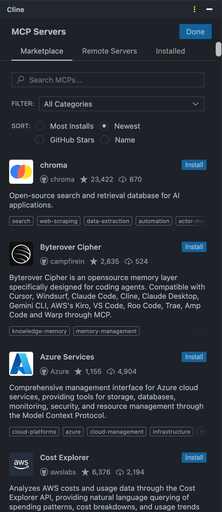
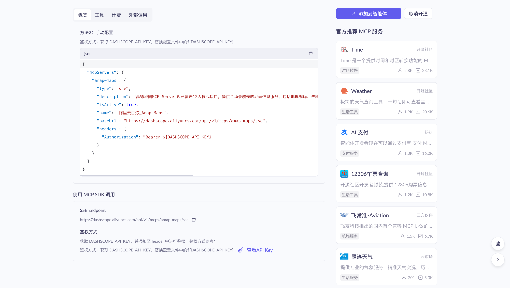
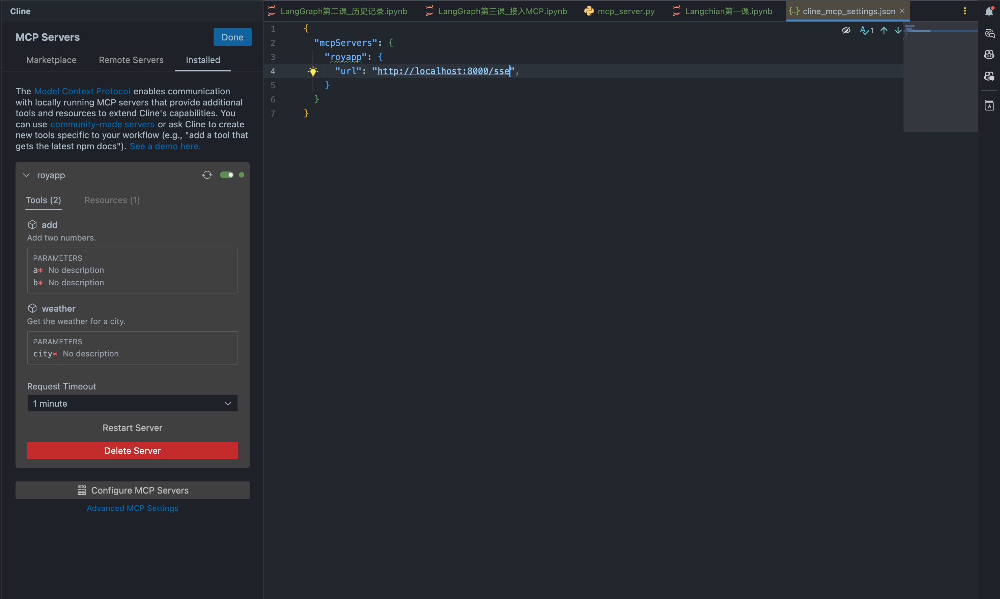
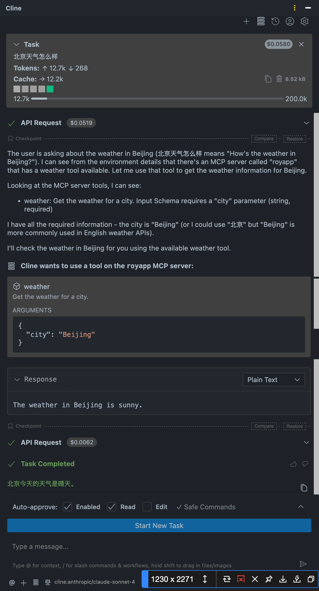

一、下载插件
下载IDEA插件Cline，通过插件接入MCP

二、通过阿里云百炼简单查看
开通高德地图的MCP服务

三、详细梳理MCP整体工作流程
两种实现形式：SSE和STDIO
SSE：
{
"mcpServers": {
"amap-amap-sse": {
"url": "https://mcp.amap.com/sse?key=APIkey"
}
}
}这种方式是在本地安装NodeJs。很显然是通过本地执行npx指令，执行应用程序，从而获得高的地图数据。 我们能够看出SSE和STUDIO的工作机制
- SSE：是一种基于HTTP协议实现的长链接，只不过SSE协议是一种从服务端向客户端单项推送数据的长链接协议。也就是高德地图需要提供一个HTTP服务，客户端与HTTP服务建立一个长连接，客户端可以不断的访问高德地图的HTTP服务，获得高的地图的服务数据，这时候的工作机制和以往HTTP服务很像，只是服务端压力会比较大。
- STDIO：这种工作机制的本质是在客户端本地执行一个应用程序。通过应用程序获得结果。MCP的服务是由MCP服务社记者设计的，但是执行却是在客户端的机器执行。这个服务提供者提供了一种操作客户端机器的机会。
四、LangGraph连接Agent
langraph中提供了新的功能模块，langchain-mcp-adapters
import asyncio
from langchain_mcp_adapters.client import MultiServerMCPClient
from langgraph.prebuilt import create_react_agent
from config.load_key import load_key
from langchain_community.chat_models import ChatTongyi
from langchain_mcp_adapters.tools import load_mcp_tools
async def main():
# 构建阿里云百炼大模型客户端
llm = ChatTongyi(
model="qwen-plus",
api_key=load_key("API-KEY")
)
client = MultiServerMCPClient(
{
# "amap-amap-sse": {
# "url": "https://mcp.amap.com/v1/streaming",
# "transport": "streamable_http"
# },
"amap-maps": {
"command": "npx",
"args": [
"-y",
"@amap/amap-maps-mcp-server"
],
"env": {
"AMAP_MAPS_API_KEY": "YOUR_AMAP_API_KEY"
},
"transport": "stdio"
}
}
)
async with client.session("amap-maps") as session:
tools = await load_mcp_tools(session)
agent = create_react_agent(
model=llm,
tools=tools
)
response = await agent.invoke(
{
"messages": [{"role": "user", "content": "帮我查一下北京到上海的航班"}]
}
)
print(response)
# 执行异步主函数
asyncio.run(main())
五、手写实现一个mcp服务
https://modelcontextprotocol.github.io/python-sdk/ 手写一个python文件，mcp_server.py
from mcp.server.fastmcp import FastMCP
mcp = FastMCP("roymcpdemo")
@mcp.tool()
def add(a: int, b: int) -> int:
"""Add two numbers."""
print(f"roy mcp demo called : add({a}, {b})")
return a + b
@mcp.tool()
def weather(city: str) -> str:
"""Get the weather for a city."""
print(f"roy mcp demo called : weather({city})")
return f"The weather in {city} is sunny."
@mcp.resource("greeting://{name}")
def greeting(name: str) -> str:
"""Get a greeting for a name."""
print(f"roy mcp demo called : greeting({name})")
return f"Hello, {name}!"
if __name__ == "__main__":
mcp.run(transport="sse")
#mcp.run(transport="stdio")

以上是通过sse方式，接下来查看通过stdio的方式
from mcp import StdioServerParameters,stdio_client,ClientSession
import mcp.types as types
server_params = StdioServerParameters(
command="python",
args=["/path/to/mcp_server.py"],
env=None
)
async def handle_sampling_message(message: types.CreateMessageRequestParams) -> types.CreateMessageResult:
print(f"Received sampling message: {message}")
return types.CreateMessageResult(
role="assistant",
content=types.TextContent(
type="text",
text="This is a response from the client."
),
model="gpt-3.5-turbo",
stopReason="endTurn"
)
async def run():
async with stdio_client(server_params) as (read, write):
async with ClientSession(read,write,sampling_callback=handle_sampling_message) as session:
await session.initialize()
prompts = await session.list_prompts()
print(f"prompts: {prompts}")
tools = await session.list_tools()
print(f"tools: {tools}")
resources = await session.list_resources()
print(f"resources: {resources}")
result = await session.call_tool("weather", {"city": "New York"})
print(f"result: {result}")
if __name__ == "__main__":
import asyncio
asyncio.run(run())通过调用刚刚写的server.py来实现
python /path/to/mcp_client.py
prompts: meta=None nextCursor=None prompts=[]
tools: meta=None nextCursor=None tools=[Tool(name='add', title=None, description='Add two numbers.', inputSchema={'properties': {'a': {'title': 'A', 'type': 'integer'}, 'b': {'title': 'B', 'type': 'integer'}}, 'required': ['a', 'b'], 'title': 'addArguments', 'type': 'object'}, outputSchema={'properties': {'result': {'title': 'Result', 'type': 'integer'}}, 'required': ['result'], 'title': 'addOutput', 'type': 'object'}, icons=None, annotations=None, meta=None), Tool(name='weather', title=None, description='Get the weather for a city.', inputSchema={'properties': {'city': {'title': 'City', 'type': 'string'}}, 'required': ['city'], 'title': 'weatherArguments', 'type': 'object'}, outputSchema={'properties': {'result': {'title': 'Result', 'type': 'string'}}, 'required': ['result'], 'title': 'weatherOutput', 'type': 'object'}, icons=None, annotations=None, meta=None)]
resources: meta=None nextCursor=None resources=[]
result: meta=None content=[TextContent(type='text', text='The weather in New York is sunny.', annotations=None, meta=None)] structuredContent={'result': 'The weather in New York is sunny.'} isError=False
[10/13/25 21:21:16] INFO Processing request of type server.py:664
ListPromptsRequest
INFO Processing request of type server.py:664
ListToolsRequest
INFO Processing request of type server.py:664
ListResourcesRequest
INFO Processing request of type server.py:664
CallToolRequest
Process finished with exit code 0
注意需要将文件改变为stdio模式